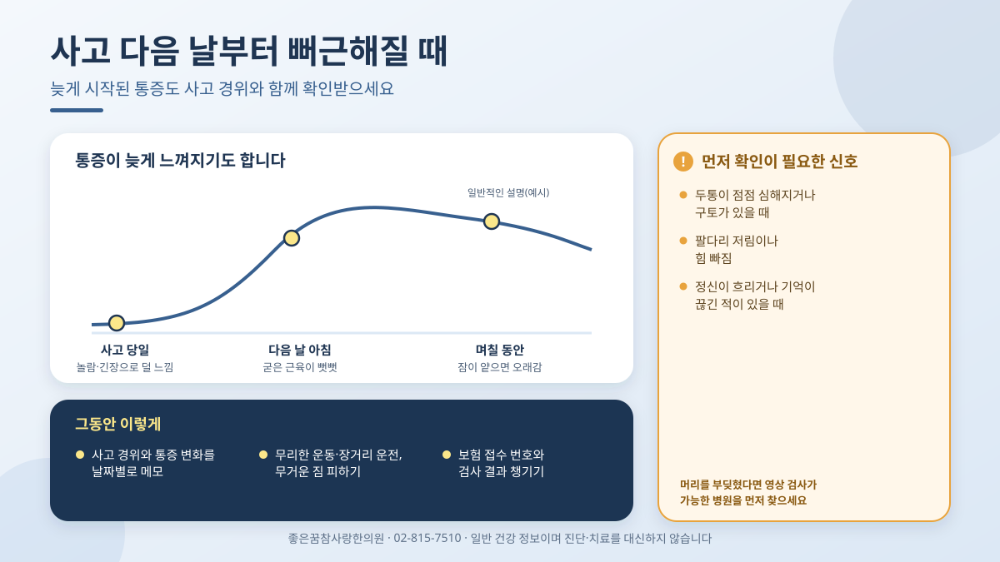

이종호 한의사 감수좋은꿈참사랑한의원 대표원장 (한의사 면허번호 19769)발행 2026-11-23 · 수정 2026-11-26
이 글의 차례
- 왜 이런 불편이 생길 수 있나요
- 왜 사고 당일보다 다음 날 아침에 더 뻐근할까요?
- 먼저 이렇게 여쭙니다
- 스스로 점검해 보세요
- 일상에서 먼저 해 볼 수 있는 것
- 사고 뒤 첫 며칠, 몸은 어떻게 쓰면 좋을까요?
- 출근이나 등교는 어떻게 하면 좋을까요?
- 늦게 시작된 통증도 사고 때문이라고 볼 수 있나요?
- 예를 들면 이런 경우입니다
- 얼마나 지켜보고 언제 상담할까요
- 하던 운동은 언제부터 다시 해도 될까요?
- 다른 병원 진료를 함께 받고 있다면
- 잠자리는 어떻게 바꿔 보면 좋을까요?
- 놀란 마음도 몸의 뻐근함과 이어질 수 있을까요?
- 같은 차에 탔던 가족마다 시작이 다를 수 있습니다
- 통증 점수는 이렇게 매겨 보세요
- 한의원에서 함께 살필 수 있는 경우
- 이렇게 기록해 오시면 상담이 쉬워집니다
- 이런 증상은 먼저 확인이 필요합니다
- 관련 글
교통사고 다음 날부터 목이나 허리가 뻐근해지는 일은 드물지 않아, 늦게 시작된 통증이라도 사고 경위와 함께 확인받는 것이 좋습니다. 다만 머리를 부딪혔거나 두통·구토·저림이 있다면 영상 검사가 가능한 병원에서 응급 확인을 먼저 받아야 합니다.
사고 당일 괜찮았다고 해서 다음 날의 뻐근함을 가볍게 넘기지 말고, 언제부터 어떻게 불편해졌는지 기록해 두시길 권합니다. 사고 순간의 기억은 생각보다 빨리 흐려져서, 하루라도 일찍 적어 둔 메모가 진료 때 가장 믿을 만한 자료가 됩니다.
왜 이런 불편이 생길 수 있나요
- 사고 순간 놀라고 긴장한 상태에서는 통증을 덜 느끼다가, 긴장이 풀리며 뒤늦게 느끼는 경우가 있습니다.
- 갑자기 앞뒤로 흔들리는 충격은 목과 허리 주변 근육과 인대에 부담을 줄 수 있습니다.
- 하룻밤 자고 나면 굳은 근육이 아침에 더 뻣뻣하게 느껴질 수 있습니다.
- 사고 뒤 잠이 얕아지고 긴장이 이어지면 뻐근함이 오래갈 수 있습니다.
- 엑스레이는 주로 뼈를 보는 검사라 근육·인대의 불편은 잘 드러나지 않을 수 있습니다.
왜 사고 당일보다 다음 날 아침에 더 뻐근할까요?
사고 순간 몸은 크게 놀라 긴장 상태가 됩니다. 이때는 통증보다 상황을 수습하는 데 온 신경이 쏠려, 목이나 허리가 무리를 했어도 그 신호를 잘 알아차리지 못합니다. 집에 돌아와 마음이 놓이고 나서야 몸이 보내던 신호가 하나둘 느껴지기 시작합니다.
자는 동안에는 몸을 거의 움직이지 않습니다. 충격을 받은 근육과 인대 주변이 밤새 한 자세로 굳어 있다가, 아침에 일어나 고개를 돌리거나 허리를 펴는 순간 뻣뻣함이 한꺼번에 드러납니다. 그래서 '어제는 괜찮았는데 오늘 아침 갑자기'라고 말씀하시는 분이 많습니다.
사고를 처리하느라 하루 종일 긴장하며 통화하고 서류를 챙기는 것도 몸에는 부담입니다. 어깨를 움츠린 채 휴대폰을 오래 붙들고 있으면 목 주변이 더 굳어, 다음 날의 뻐근함을 키우기도 합니다.
먼저 이렇게 여쭙니다
- 사고는 언제, 어떤 상황이었나요?
- 안전벨트를 하고 계셨고, 어느 자리에 앉아 계셨나요?
- 통증은 언제부터 시작되었나요?
- 머리를 부딪히거나 정신을 잃은 적이 있나요?
- 병원에서 영상 검사를 받으셨나요?
스스로 점검해 보세요
- 사고 날짜와 시간, 앉은 자리, 충격 방향을 말할 수 있다
- 통증이 처음 느껴진 때를 기억한다(당일 밤, 다음 날 아침 등)
- 고개를 돌리거나 허리를 숙일 때 한쪽이 더 불편하다
- 아침에 일어날 때 목·허리가 특히 뻣뻣하다
- 사고 뒤 잠이 얕아지거나 자주 깬다
- 팔이나 다리가 저리거나 힘이 빠지는 느낌이 있다
- 머리를 부딪혔거나 잠깐이라도 정신이 멍했던 적이 있다
마지막 두 항목 가운데 하나라도 해당하면 한의원보다 영상 검사가 가능한 병원 확인이 먼저입니다.
일상에서 먼저 해 볼 수 있는 것
- 사고 경위와 통증 변화를 날짜별로 메모하기
- 무리한 운동이나 장거리 운전 피하기
- 자는 자세가 불편하면 베개 높이 조절하기
- 자동차보험 접수 절차와 챙길 서류는 방문 전 전화로 확인해 두기
- 사고 뒤 며칠은 무거운 짐 들기 피하기
사고 뒤 첫 며칠, 몸은 어떻게 쓰면 좋을까요?
아프다고 하루 종일 누워만 있으면 오히려 몸이 더 굳기 쉽습니다. 통증이 심하지 않은 범위에서 집 안을 천천히 걷고, 고개와 어깨를 작게 움직여 주세요. 아픈 방향으로 억지로 늘이기보다 편한 방향부터 조금씩 넓혀 가는 것이 좋습니다.
따뜻한 물로 짧게 샤워하면 굳은 몸이 한결 부드러워지는 분이 많습니다. 다만 부딪힌 자리가 붓고 열감이 있다면 그 부위를 뜨겁게 하지 말고, 진료 때 그 상태를 먼저 말씀해 주세요.
사고 직후에는 휴대폰과 컴퓨터를 보는 시간이 늘기 쉽습니다. 보험 접수나 연락을 하느라 고개를 숙인 시간이 길었다면, 30분에 한 번은 화면에서 눈을 떼고 고개를 천천히 들어 어깨 힘을 빼 주세요.
출근이나 등교는 어떻게 하면 좋을까요?
일상을 이어 가는 것 자체는 괜찮은 경우가 많습니다. 다만 사고 뒤 며칠은 평소보다 몸이 쉽게 지치니, 무거운 가방은 가볍게 줄이고 한쪽 어깨로만 메지 않도록 해 주세요.
오래 앉아 일하신다면 한 시간에 한 번은 일어나 자리 주변을 걸어 주세요. 의자 등받이에 허리를 붙이고 앉으면 허리가 덜 지칩니다. 운전을 해야 한다면 고개를 돌려 뒤를 살피기 불편한 동안에는 미루는 편이 안전합니다.
학생이라면 책상에 엎드려 자거나 고개를 오래 숙여 문제를 푸는 자세가 목과 허리의 뻐근함을 키울 수 있습니다. 쉬는 시간마다 자리에서 일어나 기지개를 켜고, 책은 받침대로 조금 세워 보면 고개를 덜 숙이게 됩니다. 몸이 무겁다고 느껴지는 날은 그날 공부 시간을 조금 줄여도 괜찮습니다.
늦게 시작된 통증도 사고 때문이라고 볼 수 있나요?
통증이 하루 이틀 늦게 시작되는 일은 드물지 않습니다. 저는 사고 경위와 통증이 처음 느껴진 때, 그사이 무엇을 하셨는지를 차례로 듣고 몸의 상태를 살펴 함께 판단합니다. 그래서 사고 당일부터의 흐름을 기억나는 대로 적어 오시면 큰 도움이 됩니다.
사고와 상관없이 원래 있던 통증이 있다면 그것도 숨기지 말고 말씀해 주세요. 예전부터 아팠던 곳과 사고 뒤 새로 불편해진 곳을 구분해 두어야 어디에 집중할지 정하기가 쉬워집니다. 예전에 같은 부위를 다친 적이 있다면 언제쯤이었는지, 그때 어떤 진료를 받으셨는지도 기억나는 만큼 알려 주세요.
예를 들면 이런 경우입니다
- 예를 들어 출근길 신호 대기 중 뒤차에 받힌 직장인이 당일엔 괜찮아 그대로 출근했다가 다음 날 아침 고개를 돌리기 어려워진 경우라면, 사고 시각과 당일 느낌, 다음 날 처음 불편했던 동작을 순서대로 적어 오시면 경과를 이어서 보기 쉽습니다.
- 예를 들어 학원 차량 뒷좌석에 있던 수험생이 급정거 충격 뒤 이틀째부터 허리가 뻐근해 오래 앉아 있기 힘들어진 경우라면, 보호자와 함께 사고 경위를 알려 주시고 공부 자세와 앉아 있는 시간도 같이 살핍니다.
- 예를 들어 택시 뒷자리에서 손잡이를 잡지 못한 채 충격을 받은 어르신이 며칠 뒤 어깨와 허리가 함께 아파진 경우라면, 드시는 약과 부딪힌 곳이 있는지부터 확인하고 필요하면 영상 검사를 먼저 안내합니다.
얼마나 지켜보고 언제 상담할까요
- 응급 신호가 없는 뻐근함이라도 며칠 참고 지켜보기보다, 사고 경위가 또렷할 때 진찰을 받아 두는 편이 경과를 이어서 보기에 좋습니다.
- 처음 2~3일은 뻐근함이 오르내릴 수 있어 아침·저녁 통증 점수와 불편한 동작을 적어 두면 변화가 잘 보입니다.
- 일주일이 지나도 뻐근함이 줄지 않거나 목에서 어깨·등으로, 허리에서 엉덩이·다리로 범위가 넓어진다면 진찰 때 바로 말씀해 주세요. 필요하면 영상 검사를 권해 드립니다.
하던 운동은 언제부터 다시 해도 될까요?
헬스나 달리기, 등산처럼 꾸준히 하던 운동이 있다면 사고 뒤 며칠은 쉬어 가시길 권합니다. 몸이 뻐근한 상태에서 평소 무게나 거리를 그대로 하면, 놀란 근육에 부담이 더해져 불편이 길어질 수 있습니다.
다시 시작할 때는 가벼운 걷기부터 해 보세요. 걷고 난 다음 날 아침 뻐근함이 더 심해지지 않았다면 시간을 조금씩 늘리고, 무게를 드는 운동이나 고개를 젖히는 동작은 진료 때 몸 상태를 살핀 뒤 함께 정합니다.
다른 병원 진료를 함께 받고 있다면
사고 뒤 정형외과나 응급실에서 이미 진료를 받으셨다면, 검사 결과지와 처방받은 약 이름을 챙겨 와 주세요. 어떤 검사를 받았고 무엇을 들으셨는지 알면, 같은 확인을 반복하지 않고 그다음 단계부터 살필 수 있습니다.
처방받은 약은 지시대로 드시고, 한의원 진료를 시작했다고 해서 스스로 끊지 마세요. 한약을 검토하게 되면 지금 드시는 약을 먼저 확인한 뒤 정합니다. 임신 중이라면 먼저 알려 주시고 산부인과와도 상의해 주세요.
잠자리는 어떻게 바꿔 보면 좋을까요?
사고 뒤 아침마다 뻐근함이 심하다면 베개부터 살펴보세요. 똑바로 누웠을 때 턱이 가슴 쪽으로 당겨지거나 뒤로 젖혀지지 않는 높이가 편하고, 옆으로 누울 때는 어깨 너비만큼 조금 더 높아야 목이 한쪽으로 꺾이지 않습니다.
허리가 뻐근하다면 똑바로 누울 때 무릎 아래에, 옆으로 누울 때 무릎 사이에 쿠션을 끼우면 허리에 실리는 부담이 줄어드는 분이 많습니다. 아침에 일어날 때는 바로 벌떡 일어나지 말고 옆으로 돌아누운 뒤 팔로 바닥을 짚고 천천히 일어나세요.
놀란 마음도 몸의 뻐근함과 이어질 수 있을까요?
사고를 겪고 나면 차 소리에 깜짝 놀라거나, 그 순간이 자꾸 떠올라 잠이 얕아지는 분이 있습니다. 마음이 긴장하면 어깨와 목에도 힘이 들어가, 뻐근함이 생각보다 오래 이어지기도 합니다.
이런 변화는 부끄러운 일이 아니니 진료 때 편하게 말씀해 주세요. 잠과 긴장 상태를 함께 여쭙고, 그에 맞춰 살필 방법을 정합니다. 잠과 불안이 길어진다면 교통사고 뒤 불안하고 잠을 못 잘 때는 어떻게 살피나요?도 함께 읽어 보세요.
같은 차에 탔던 가족마다 시작이 다를 수 있습니다
같은 사고를 겪어도 앉은 자리와 자세, 원래 몸 상태가 달라 불편이 시작되는 때와 부위가 사람마다 다릅니다. 운전한 분은 다음 날 목이, 옆자리 분은 사흘째 허리가 아파 오는 식으로 차이가 나기도 합니다.
그래서 가족이 함께 오시더라도 한 분씩 따로 여쭙고 따로 살핍니다. 지금은 괜찮다는 가족이 있다면 며칠 동안은 아침에 일어날 때의 느낌을 서로 물어봐 주세요. 늦게 시작된 불편도 그 날짜를 적어 두면 진료 때 흐름을 이어서 보기 쉽습니다.
아이가 함께 타고 있었다면 아이는 아픈 곳을 정확히 말하지 못할 수 있습니다. 평소보다 보채거나 잠을 설친다면 소아청소년과에서 먼저 확인받으세요.
통증 점수는 이렇게 매겨 보세요
0은 전혀 아프지 않은 상태, 10은 상상할 수 있는 가장 심한 통증입니다. 정확한 숫자보다 매일 같은 기준으로 매기는 것이 중요해서, 아침에 일어나 고개를 돌릴 때처럼 정해 둔 동작 하나로 점수를 매기면 변화가 잘 보입니다.
예를 들어 '11월 23일 아침 6점, 고개 오른쪽 돌리기 불편. 저녁 4점'처럼 한 줄이면 충분합니다. 이렇게 며칠만 모여도 어느 시간대에 불편이 큰지, 어떤 날 더 심했는지가 한눈에 보입니다. 점수를 매기기 애매한 날은 '어제보다 조금 편함', '어제와 비슷함'처럼 말로 적어 두셔도 충분합니다. 그 한마디도 흐름을 읽는 데 쓰입니다.
한의원에서 함께 살필 수 있는 경우
- 사고 뒤 목·허리가 뻐근한 경우 사고 경위와 불편한 동작을 기준으로 살핍니다.
- 통증과 함께 잠이 얕아진 경우 잠과 긴장을 함께 살핍니다.
- 필요하다고 판단될 때 침, 추나, 온열 등을 상태에 맞게 이어서 씁니다.
좋은꿈참사랑한의원에서는 사고 경위와 아픈 동작을 먼저 듣고, 응급 확인이 필요한 신호가 없는지 확인합니다. 필요하다고 판단될 때 초음파 등으로 살핀 뒤 침·약침·추나·온열 등 상태에 맞는 방법을 정합니다.
처음 오시면 접수 때 사고 날짜와 다른 병원에서 받은 검사 결과, 드시는 약을 알려 주세요. 진료실에서는 사고 경위와 통증이 시작된 때를 듣고 응급 신호가 없는지 먼저 여쭌 뒤, 맥을 짚고 혀와 배를 살핍니다.
그다음 목과 허리를 직접 움직여 보며 불편한 방향과 저림 여부를 확인하고, 필요하다고 판단될 때 초음파로 근육과 인대 주변을 살핀 다음 오늘 할 치료와 이유를 먼저 설명해 드립니다. 다음에 오시면 지난번 가장 불편했던 동작부터 이어서 확인합니다. 자동차보험 접수 절차와 필요한 서류는 방문 전 전화로 확인해 주세요.
이렇게 기록해 오시면 상담이 쉬워집니다
- 사고 날짜·시간과 상황(앉은 자리, 충격 방향)
- 통증이 시작된 시점
- 날짜별 통증 정도(0~10)와 불편한 동작
- 다른 병원에서 받은 검사 결과와 처방받은 약
이런 증상은 먼저 확인이 필요합니다
- 두통이 점점 심해지거나 구토가 있는 경우
- 팔다리 저림이나 힘 빠짐이 있는 경우
이런 신호가 있으면 한의원보다 가까운 병원이나 응급실을 먼저 찾으세요.
관련 글

여쭙는 것
- 사고는 언제, 어떤 상황이었나요?
- 안전벨트를 하고 계셨고, 어느 자리에 앉아 계셨나요?
- 통증은 언제부터 시작되었나요?
생활에서 해 볼 것
- 사고 경위와 통증 변화를 날짜별로 메모하기
- 무리한 운동이나 장거리 운전 피하기
- 자는 자세가 불편하면 베개 높이 조절하기
한의원에서 함께 살필 것
- 사고 뒤 목·허리가 뻐근한 경우 사고 경위와 불편한 동작을 기준으로 살핍니다.
- 통증과 함께 잠이 얕아진 경우 잠과 긴장을 함께 살핍니다.
- 필요하다고 판단될 때 침, 추나, 온열 등을 상태에 맞게 이어서 씁니다.
먼저 확인이 필요한 신호
- 두통이 점점 심해지거나 구토가 있는 경우
- 팔다리 저림이나 힘 빠짐이 있는 경우
한눈에 보는 표
| 구분 | 핵심 |
|---|---|
| 여쭙는 것 | 사고는 언제, 어떤 상황이었나요? 안전벨트를 하고 계셨고, 어느 자리에 앉아 계셨나요? |
| 생활에서 해 볼 것 | 사고 경위와 통증 변화를 날짜별로 메모하기 무리한 운동이나 장거리 운전 피하기 |
| 한의원에서 함께 살필 것 | 사고 뒤 목·허리가 뻐근한 경우 사고 경위와 불편한 동작을 기준으로 살핍니다. 통증과 함께 잠이 얕아진 경우 잠과 긴장을 함께 살핍니다. |
| 먼저 확인이 필요한 신호 | 두통이 점점 심해지거나 구토가 있는 경우 팔다리 저림이나 힘 빠짐이 있는 경우 |
자주 묻는 질문
사고 며칠 뒤에 아파도 진료받을 수 있나요?
네. 통증이 늦게 시작되는 경우도 있어 사고 경위와 함께 말씀해 주세요.
자동차보험으로 진료할 수 있나요?
자동차보험 진료와 관련된 접수 절차, 필요한 서류는 상황에 따라 달라 방문 전 전화(02-815-7510)로 확인해 주세요.
퇴근 후에도 진료받을 수 있나요?
평일은 09:30~20:00(점심 13:00~14:00), 토·일·공휴일은 09:30~15:00(점심시간 없음)에 진료합니다. 방문 전 전화(02-815-7510)로 확인해 주세요.
병원에서 영상 검사를 받지 않았는데 바로 와도 되나요?
머리를 부딪혔거나 저림·두통·구토가 있다면 영상 검사를 먼저 받으세요. 이런 신호가 없다면 사고 경위를 듣고 필요하면 검사를 안내합니다.
엑스레이에서 이상이 없다는데 왜 뻐근한가요?
엑스레이는 주로 뼈를 보는 검사라 근육·인대의 불편은 잘 드러나지 않을 수 있습니다. 불편한 동작과 경과를 기준으로 함께 살피고, 필요하면 다른 검사를 권해 드립니다.
병원 치료와 한의원 진료를 같이 받아도 되나요?
가능한 경우가 많습니다. 다른 병원에서 받은 검사와 처방 내역을 알려 주시면 함께 참고합니다.
좋은꿈참사랑한의원은 재진 때 지난번 이야기부터 이어서 여쭙니다. 진료시간과 예약은 오시는 길에서 확인하세요.
어디서 상담받을 수 있나요?
좋은꿈참사랑한의원은 서울 동작구 만양로2길 2 신성빌딩 3층·5층(서울 동작구 상도동, 7호선 상도역 3번 출구 근처)에 있습니다. 한의사 3명(이종호 대표원장, 조영기 수석진료원장, 정원영 진료원장)이 진료합니다. 진료시간은 평일 09:30~20:00(점심 13:00~14:00), 토·일·공휴일 09:30~15:00이며, 방문 전 전화로 확인을 권합니다. 예약은 네이버 예약, 카카오톡 상담, 전화 02-815-7510로 받습니다.
이 글은 일반적인 건강 정보이며 개인의 진단이나 치료를 대신하지 않습니다. 증상이 있거나 복용 중인 약이 있다면 진료를 통해 확인하세요. 치료 효과는 개인마다 다를 수 있습니다.
작성 기준: 일반적으로 알려져 있는 건강 정보를 참고해 정리했습니다(대표원장 감수). 증상 기록은 1~2주 동안 하루 1회, 비슷한 시간에 적어 오시면 지난 상태와 비교하기 쉽습니다.